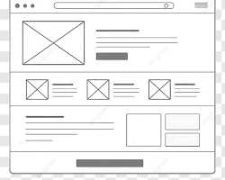
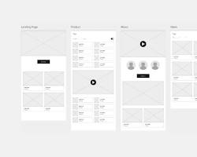

1. Site Name
Name: Solar Tech Solutions
Reasoning: I selected "Solar Tech Solutions" because it clearly reflects the website's focus on practical solar energy configurations, component sizing, and renewable electrical hardware guidelines for installers and technical learners.
2. Site Purpose
The site serves as an educational and technical resource for solar power installation guidelines. It provides sizing calculation rules, inverter specifications, battery bank arrangement advice, and an interactive contact or query form for customized system recommendations.
3. Scenarios
- What gauge wire and charge controller capacity do I need for a 24V solar battery bank?
- Where can I submit a request to get a technical recommendation for my off-grid power setup?
4. Color Schema
The primary and secondary colors below are applied directly within this planning document stylesheet to fulfill the branding guidelines.
Used for primary headers, navigation backgrounds, and main accents.
Used for highlights, call-to-action buttons, and key borders.
Used for page backgrounds and content card containers.
5. Typography
Primary Heading Font: Montserrat (Sans-serif) - Used for <h1>, <h2>, and <h3> headings.
Body Text Font: Open Sans (Sans-serif) - Used for body text, paragraphs, and list items.
6. Wireframes
Below are layout wireframe sketches for both mobile and wide screen views:
Mobile View Layout

Desktop View Layout
